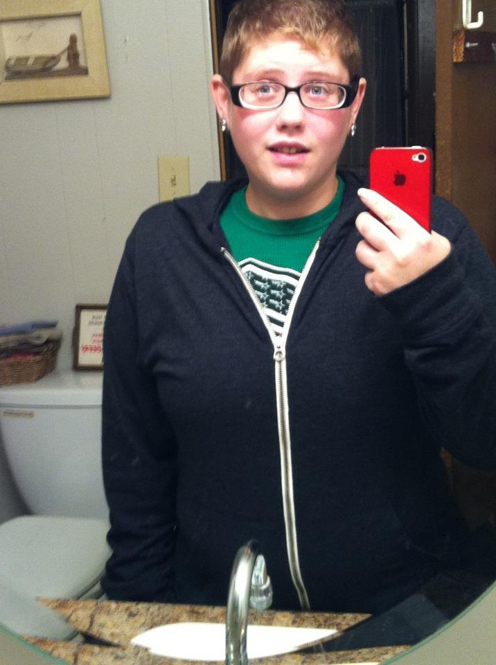

Keeping Brandy's light alive through her story
November 30, 1992 - May 17, 2012
A beloved daughter, granddaughter, sister, friend, and student whose life was tragically cut short. This memorial honors her memory, shares her story, and keeps her light shining.

Fifteen Year Remembrance
Sunday, May 16, 2027
Gather with us at the memorial bench on the campus of Youngstown State University to share memories and light a candle for Brandy.
Date to be confirmed. Please check back for details.
Thirteen Years · A Tribute
A six-minute tribute featuring Brandy's mom, Carrie, sharing her journey of grief, healing, and hope. You'll also hear Brandy's own voice and laughter, a moment that brings her spirit close again.
"Because of you, I learned that love is a precious gift… I will love hard and I will love deep."
Explore
Poems and journal entries from Brandy's own teenage blog, preserved in her voice.
Read her writing →The memorial bench, our candlelight vigils, scholarships, and a gallery of photos.
See how we remember →